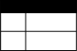

bpmn-visualization is a TypeScript library for visualizing process execution data on BPMN
diagrams.
1. Overview
1.1. Live Examples
To see bpmn-visualization in action, give a try to the examples live environment.
You will quickly have an overview of the bpmn-visualization capabilities.
1.2. Source Code
bpmn-visualization is an open source library.
You can find the source code on GitHub.
We will be more than happy to exchange ideas and more with you on the subject.
Because who knows, if you feel like contributing (feature, bug, doc, etc), you are very welcome to do so! 🙂
1.3. Usage
1.3.1. Bundles
bpmn-visualization can be directly used in HTML pages or integrated in Javascript and TypeScript applications. It is distributed as a npm package
in various bundle formats.
1.3.2. API
The API documentation is provided directly in the package thanks to the TypeScript declaration files that can be used in IDE for code assist.
1.3.3. More technical details
For more technical details and how-to, go to the bpmn-visualization-examples repository.
1.4. Glossary
Here are a list of terms and concepts we are using in the bpmn-visualization documentation, issues, examples…
| Term or concept | Description |
|---|---|
BPMN rendering |
The part of the rendering that concerns purely the BPMN model according to the specification |
Customization |
The library user changes the rendering / behavior using their own code by extending the library |
Configuration |
The library user changes the rendering / behavior using existing features |
Custom behavior |
Any behavior that causes changes in the BPMN rendering (adding popup, changing elements color or thickness…) |
Diagram navigation |
Set of user interactions, that permits pan and zoom, to achieve desired visibility on diagram elements or diagram as a whole |
Options |
Configuration elements used at the library initialization and by the APIs at runtime |
Library integration |
Something about how an app can integrate the library |
Process data |
Execution data + derived data |
Execution data |
Data that is generated during the natural process instance flow: state, logs, … |
Derived data |
Data that by any means derives from the execution data and/or other contextual data |
1.5. BPMN Diagrams
BPMN diagrams are at the foundation of the bpmn-visualization capabilities.
Go to Supported BPMN Elements section to better now what is the current BPMN support.
1.5.1. BPMN rendering
The first goal of bpmn-visualization is to render BPMN diagrams but this is up to the integration (i.e. the application that uses it) to provide the BPMN diagram
content.
For instance, it can be retrieved from a local file, by pulling a REST API, made available after a push from websockets or SSE, …
Once the integration gets the BPMN diagram input source, it just has to pass it to bpmn-visualization which is then in charge of rendering the diagram.
1.5.1.1. Default BPMN Theme
By default, the rendering uses the following settings:
-
fill color:
white -
stroke color:
black -
font:
-
family:
Arial, Helvetica, sans-serif -
color:
black -
size:
11
-
The default colors are deliberately neutral. They make it easy to highlight process data with specific colors.
If the defaults don’t fit your needs, please read how to customize the BPMN Theme.
Default BPMN Theme
1.5.1.2. Customizing the BPMN Theme
It is possible to change the default theme by extending bpmn-visualization or by using CSS in the page displaying the diagram.
-
Extending gives the full control on the theme customization, including colors, size, icons, and more.
-
CSS is the fastest to implement but provides fewer features. For instance, you cannot change the icons or precisely control the size of the strokes.
| The current extension mechanism is experimental and subject to change. |
For more details, see the Custom BPMN Theme examples.
Custom BPMN Theme
1.5.2. Diagram Navigation
In addition to BPMN rendering, bpmn-visualization provides several ways to explore and navigate through the BPMN diagrams.
This is made available at load time or at runtime, through user interactions or API calls.
The navigation features are:
-
zoom: change the diagram scale to show details or have an overview of the diagram.
-
fit: reset/set the zoom level and eventually translate the diagram (for instance, center the diagram).
-
pan: drag the diagram and move/translate it, to hidden parts or change the position in the view.
Navigation is particularly useful for large diagrams. Fitting the view to the screen provides a good overview of a large diagram, but it can be hard to see details.
You can zoom to highlight specific parts, then pan to view different diagram portions.
After navigating around, you may want to reset the zoom level and go back to a full diagram overview.
1.5.3. BPMN rendering and Diagram Navigation in Action

Navigation with the miwg-test-suite C.2.0 BPMN diagram
1.6. Process data
bpmn-visualization gives you the opportunity to visualize the Process Data on top of the BPMN diagrams.
The purpose of the library is to gain the visibility on what happens in your processes.
Process Data consists of two main data sets:
-
Execution Data - data that accompanies the process instance (case) through the execution flow. All the events occurring along this workflow, contractual data and every other bits of information related to this particular instance from start to the end.
-
Derived Data - data that derives from the execution data: predictions, analysis, statistics. The other data that can be associated with the process instance can also be a part of this set.
1.6.1. Process data examples
The example of Process Data for different tasks can be as follows.
user task:
-
time of the execution
-
percentage of the time spent in this task in the scope of whole time to finish the process instance
-
data related to list of activities done to complete this task:
-
SAP data manipulations
-
messaging system data
-
Microsoft Excel entries (reporting)
-
other proprietary systems data
-
service task:
-
time of the execution
-
data related to list of activities done to complete this task:
-
RPA robot data
-
external API call
-
…
-
1.7. Custom behavior
bpmn-visualization provides API to interact with the BPMN elements and their representation as DOM Element.
Fore more examples about Custom Behavior, see the examples live environment
1.7.1. BPMN semantic and DOM Element
A BPMN element contains BPMN semantic information that can be matched with Process data. The DOM Element let you manipulate the representation and allow enriching its behavior by adding event listeners for instance.
The following example demonstrates how to let users interact with a BPMN diagram when clicking on a task, passing the mouse over another task or a transition between two elements.
Here, it displays BPMN information only, but it could use this feature to display execution data related to the current BPMN element: execution time and details, pending user
of an activity, current error at this stage of the process, and more.

Display popovers on over or click
1.7.2. Style
The style of BPMN elements can be modified at runtime allowing to mark, hide, change appearance of one or several specific elements. For instance, this feature can be used to mark a task as in error, warn that an activity has been started for a while and seems stuck, …
This example shows how to see which path in a process is the current running activity.

Path highlighting with the miwg-test-suite C.1.1 BPMN diagram
1.8. Overlays
bpmn-visualization provides API to add overlays on top of BPMN elements. This additional overlays layer permits you to show whatever data you want and enrich your diagrams.
1.8.1. Use case
There are various use cases concerning overlays. For example the aforementioned Process data can be easily displayed in rectangular shapes on top of the edges and tasks. Whether you would like to show a path frequency or probability for the next step, the overlays are here to help you achieve this.
1.8.2. Overlays examples
To see overlays simple examples, go to the Simple examples - live demo You will find out how to add overlays to BPMN elements and how to apply style to them.

Simple overlay example.
For the more complete example, please go to Monitoring of all process instances - live demo. This demo shows how to add execution time and frequency data on diagram elements.
Monitoring of all process instances demo, execution time and frequency displayed on BPMN elements.
2. Supported BPMN Elements
| The BPMN support roadmap is available in GitHub milestones |
The following presents BPMN elements that can be rendered by the bpmn-visualization and states which is their rendering status i.e. if
the BPMN elements are rendered with their final shapes.
|
Legend for rendering status
|
2.1. Containers
| Name | Rendering | Comments |
|---|---|---|
Lane |
Sub lanes are also supported |
|
Pool |
2.2. Activities
| Name | Rendering | Icon | Comments |
|---|---|---|---|
Abstract Task |
|||
Business Rule Task |
 |
||
Manual Task |
Icon may be subject to change+ icon: the task icon is derived from the noun project 'hand' icon by João Miranda, licensed as Creative Commons CCBY 3.0 |
||
Receive Task |
|
Icon may be subject to change |
|
Script Task |
Icon may be subject to change |
||
Send Task |
Icon may be subject to change |
||
Service Task |
Icon may be subject to change |
||
User Task |
Icon may be subject to change |
||
Call Activity calling a Process |
|||
Call Activity calling a Global Task |
|||
Call Activity calling a Global Business Rule Task |
|||
Call Activity calling a Global Manual Task |
|||
Call Activity calling a Global Script Task |
|||
Call Activity calling a Global User Task |
|||
Embedded Sub-Process |
|||
Event Sub-Process |
Collapsed sub-process : |
| Name | Rendering | Icon | Comments |
|---|---|---|---|
Loop Marker |
The icon is derived from the loop of draw.io |
||
Sequential Multi-Instance Marker |
|||
Parallel Multi-Instance Marker |
Notes about markers
-
The size of the marker icons will be set to a fixed size later
-
The marker icon of the collapsed activities may be subject to change
2.3. Events
The event definition can be defined on the event or on the definitions.
Note: the following events use icons derived from existing solutions
-
link: Right arrow "Icons made by Freepik from https://www.flaticon.com"
-
message: draw.io bpmn mxgraph stencil
-
signal: triangle By Imam, ID from https://thenounproject.com
-
timer: Timer Icon "Icons made by Kirill Kazachek from https://www.flaticon.com"
| Name | Rendering | Icon | Comments |
|---|---|---|---|
None Start Event |
|||
Conditional Start Event |
The stroke & icon width may be adjusted |
||
Message Start Event |
|
The stroke & icon width may be adjusted |
|
Signal Start Event |
The stroke & icon width may be adjusted |
||
Timer Start Event |
The icon width may be adjusted |
| Name | Rendering | Icon | Comments |
|---|---|---|---|
Compensation Interrupting Start Event |
The stroke & icon width may be adjusted |
||
Conditional Interrupting Start Event |
The stroke & icon width may be adjusted |
||
Error Interrupting Start Event |
The stroke & icon width may be adjusted |
||
Escalation Interrupting Start Event |
The stroke & icon width may be adjusted |
||
Message Interrupting Start Event |
|
The stroke & icon width may be adjusted |
|
Signal Interrupting Start Event |
The stroke & icon width may be adjusted |
||
Timer Interrupting Start Event |
The icon width may be adjusted |
| Name | Rendering | Icon | Comments |
|---|---|---|---|
Conditional Non-interrupting Start Event |
The stroke & icon width may be adjusted |
||
Escalation Non-interrupting Start Event |
The stroke & icon width may be adjusted |
||
Message Non-interrupting Start Event |
|
The stroke & icon width may be adjusted |
|
Signal Non-interrupting Start Event |
The stroke & icon width may be adjusted |
||
Timer Non-interrupting Start Event |
The icon width may be adjusted |
| Name | Rendering | Icon | Comments |
|---|---|---|---|
Conditional Intermediate Catch Event |
The stroke & icon width may be adjusted |
||
Link Intermediate Catch Event |
The stroke & icon width may be adjusted |
||
Message Intermediate Catch Event |
|
The stroke & icon width may be adjusted |
|
Signal Intermediate Catch Event |
The stroke & icon width may be adjusted |
||
Timer Intermediate Catch Event |
The icon width may be adjusted |
| Name | Rendering | Icon | Comments |
|---|---|---|---|
None Intermediate Throw Event |
The stroke width may be adjusted |
||
Compensation Intermediate Throw Event |
The stroke & icon width may be adjusted |
||
Escalation Intermediate Throw Event |
The stroke & icon width may be adjusted |
||
Link Intermediate Throw Event |
The stroke & icon width may be adjusted |
||
Message Intermediate Throw Event |
The stroke & icon width may be adjusted |
||
Signal Intermediate Throw Event |
The stroke & icon width may be adjusted |
| Name | Rendering | Icon | Comments |
|---|---|---|---|
Cancel Interrupting Boundary Event |
The stroke & icon width may be adjusted |
||
Compensation Interrupting Boundary Event |
The stroke & icon width may be adjusted |
||
Conditional Interrupting Boundary Event |
The stroke & icon width may be adjusted |
||
Error Interrupting Boundary Event |
The stroke & icon width may be adjusted |
||
Escalation Interrupting Boundary Event |
The stroke & icon width may be adjusted |
||
Message Interrupting Boundary Event |
|
The stroke & icon width may be adjusted |
|
Signal Interrupting Boundary Event |
The stroke & icon width may be adjusted |
||
Timer Interrupting Boundary Event |
The stroke & icon width may be adjusted |
| Name | Rendering | Icon | Comments |
|---|---|---|---|
Conditional Non-interrupting Boundary Event |
The stroke & icon width may be adjusted |
||
Escalation Non-interrupting Boundary Event |
The stroke & icon width may be adjusted |
||
Message Non-interrupting Boundary Event |
|
The stroke & icon width may be adjusted |
|
Signal Non-interrupting Boundary Event |
The stroke & icon width may be adjusted |
||
Timer Non-interrupting Boundary Event |
The stroke & icon width may be adjusted |
| Name | Rendering | Icon | Comments |
|---|---|---|---|
None End Event |
The stroke width may be adjusted |
||
Cancel End Event |
The icon width may be adjusted |
||
Compensation End Event |
The icon width may be adjusted |
||
Error End Event |
The icon width may be adjusted |
||
Escalation End Event |
The icon width may be adjusted |
||
Message End Event |
The stroke & icon width may be adjusted |
||
Signal End Event |
The stroke & icon width may be adjusted |
||
Terminate End Event |
The stroke width may be adjusted |
2.4. Flows
| Name | Rendering | Comments |
|---|---|---|
Sequence Flow |
Subject to change: arrow size/form and position endpoint |
|
Default Sequence Flow |
Subject to change: arrow size/form and position endpoint |
|
Conditional Sequence Flow |
Subject to change: arrow size/form and position endpoint |
|
Message Flow |
|
|
Way Points |
Subject to change: paths may be rounded |
2.5. Gateways
| Name | Rendering | Icon | Comments |
|---|---|---|---|
Exclusive |
Icon may be subject to change |
||
Inclusive |
Icon may be subject to change |
||
Parallel |
Icon may be subject to change |
||
Event-Based |
|
Support the |
2.6. Labels
| Name | Rendering | Comments |
|---|---|---|
Shape Label |
||
Edge Label |
2.7. Artifacts
| Name | Rendering | Comments |
|---|---|---|
Group |
||
Text Annotation |
2.8. Associations
| Name | Rendering | Comments |
|---|---|---|
Text Annotation Association |
All three directional associations are supported: None, One, Both |
3. Architecture and Development
3.1. Architecture Overview
bpmn-visualization consists on 3 main modules:
-
the BPMN parser: read a BPMN source (xml string) and convert it into its own internal Model.
-
the BPMN renderer: display the BPMN diagrams represented by the internal Model, using the mxGraph library
-
the interactions component: interact with the BPMN elements (diagram navigation, add custom listeners to dynamically enrich and/or modify the model style, …)

3.3. BPMN Parsing
3.3.1. XML Parser
To parse XML data, we use the fast-xml-parser library.
You can see the implementation in BpmnXmlParser.ts.
3.3.2. Json Parser
To parse a JSON data, we use a custom parser.
You can see the implementation in BpmnJsonParser.ts. We have different converters (in the converter folder where the BpmnJsonParser file is) in order to match the BPMN model to our internal model.
3.4. mxGraph Integration
The mxGraph integration is in charge of rendering the BPMN diagrams, by filling the mxGraph model from the BPMN model.
It also provides the Diagram Navigation support.
For more details, see the development documentation.
3.5. Development
|